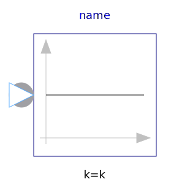
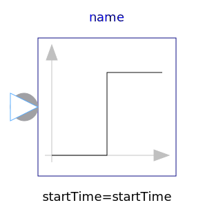

Library of signal source blocks generating Complex signals
| Name | Description |
|---|---|
| Set output signal to a time varying Complex expression | |
|  ComplexConstant | Generate constant signal of type Complex |
|  ComplexStep | Generate step signal of type Complex |
| Generate a phasor with constant magnitude and constant angular velocity of type Complex |